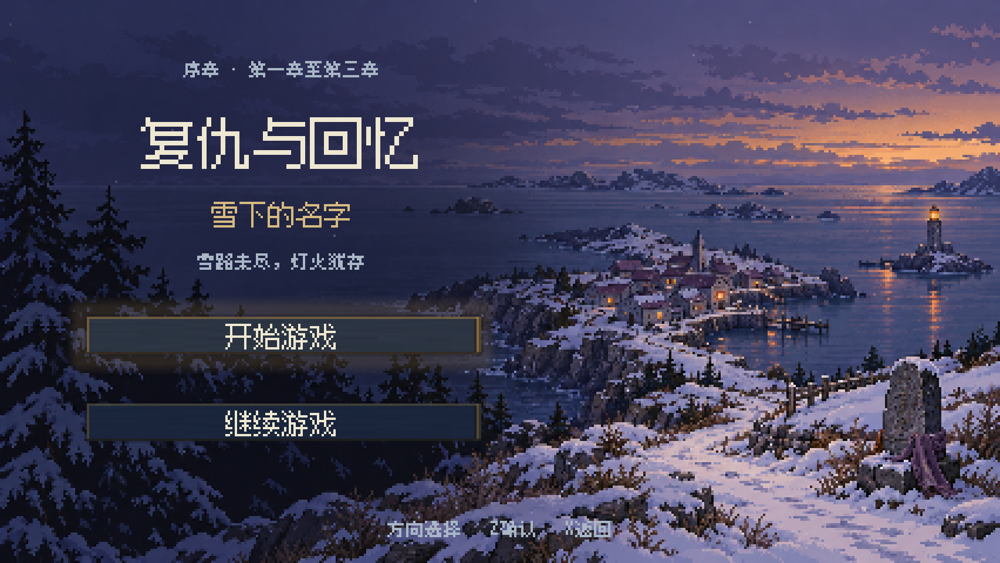

CHARACTER ART / MOTION REVIEW
角色重绘 · 全动作对照
保留身体比例、四肢动作和原作节奏，重绘服饰、发型与眼睛。新旧同步播放，逐帧检查遮挡、手持武器和衣甲结构。
首页与五槽记录 · 等待确认
0.8.13 · 两轮针对性检查完成

新增符合「雪下的名字」与双主角设定的雪海首页、开始／继续游戏、五个独立记录槽及时间显示。可选槽保存，覆盖默认返回；旧档原件保留。首页、槽位、覆盖确认、错误说明及保存反馈共10组设计与实机对照，包含宽屏和紧凑画幅；新动画含飘雪、航灯明暗、选中光晕与渐显。两轮检查已通过，等待本轮视觉确认；下方人物动作和历史记录保留。
左右行走仅修正整图位置：两相以骑手头颈处同一像素块作为固定点，消除约6输出像素的横向晃动。原有腿部姿势、动作、上下位置、灰白淡金配色及固定地面阴影保留；向上、向下和已验收待机不变。本轮仅更新对照稿，未接入游戏。
向下奔跑固定横向中线，两相分别为四腿腾空与可见双前腿落地，骑手、马身和武器共用同一上层并整体上下起伏1原生像素。沿用固定地面阴影与待机8色灰白淡金，原16帧／相节奏不变。仅改向下两张姿势，其余方向和已验收待机保持。本轮使用已有素材分层登记，未调用图片生成工具，未接入游戏。
向上奔跑保持同一中线，马腿在“上方展开、下方收拢重叠”与“可见双腿直立”间交替；两相蹄底贴同一地面，马身与骑手整体上下起伏1原生像素，连续阴影固定在地面。四向行走统一使用待机8色灰白淡金；其余方向本轮仅改配色与阴影。保持16帧／相与原循环节奏，未接入游戏，待验收。
我方黄金骑士待机：固定马身、头颈、骑手与长枪，按双前腿抬起→四腿站定→双后腿抬起→四腿站定循环；保留原14／8／14／8帧节奏。统一8色低饱和灰白与淡金，保持原体量。本轮仅更新对照稿，等待验收后接入游戏；下方为历史记录。
双方佣兵及首关流民战斗图改为更粗的像素颗粒，统一每组调色板并移除半透明碎色；33个动作及36段视频已更新。测试包同时恢复敌军已行动后的偏红色、让攻击预览框避开目标及箭头，并加入首关流民的血量/反击/围攻风险判断。0.8.12后台截图与包内检查通过，等待实机验收；下方为历史修订记录。
双方弓箭手及持弓整体等比缩至90%，以枪兵的人物高度对齐：枪兵32原生像素，弓箭手31.5–32.5；脚底固定，配色、全部动作与命中时序保持。飞箭、地图形象与游戏逻辑保留。26个动作及31段视频已更新，0.8.11包内检查通过，等待实机验收。下方0.8.10及此前内容为历史记录。
双方弓箭手、枪兵和佣兵当前战斗场景稿已接入 0.8.10，包含轻甲弓箭手、阵营对应飞箭、枪兵加宽减色与敌方佣兵深蓝装备。保留全部已验收地图形象、行走和阴影，以及首关村民主动接近并攻击敌人的行为。包内素材、动作时序、自动回合和压缩包检查通过，等待本轮实机验收。
敌方佣兵本轮进一步减少褐色与银色：靴子、护腕、肩甲及多数皮带和边饰改为三档深蓝，与蓝紫衣装协调。头发、皮肤、刀刃分别保护，轮廓、位置、腾空高度与原作刀光、雷电时序保持。地图形象保持；当前稿已接入 0.8.10 测试包，等待实机验收。
上一稿简化双方佣兵战斗场景的服装配色：人物主体每方统一14色，衣甲保留少量明暗。盟军为暖紫衣装、棕色皮具与克制的浅金边；敌军采用蓝紫衣甲，保持自然肤色与发色。现有比例、所有姿势、腾空高度、脚底与动作节奏保持；刀刃单独保护，原作刀光和雷电效果保留。地图形象保持；盟军当前稿与敌方后续深蓝装备稿均已接入 0.8.10。
敌军枪兵本轮改为整体偏蓝紫色，衣甲采用与已确认敌军弓箭手相同的三档蓝紫，肤色、棕发和木枪杆保留自然色。13色共用调色板；上一稿尺寸、所有姿势、透明轮廓、脚底锚点和动作节奏完全保留。后续修改的所有敌军小兵均沿用蓝紫配色倾向，各职业保持独立造型。当前稿已接入 0.8.10 测试包，等待实机验收。
上一稿优化双方枪兵战斗场景：人物横向加宽约8%，身高保留；同一阵营的七个姿势共用14色，减少细碎明暗。保留盟军蓝灰甲以及双方下裙甲结构；敌军暗红配色已由上方蓝紫稿取代，沿用原有持枪、突刺和奔跑姿势，脚底锚点与动画节奏保持。已接入 0.8.10 测试包；敌方颜色采用后续蓝紫稿。
此前完成的双方弓箭手轻甲服装：贴身皮甲、小肩护、护臂、短分片腰甲和轻便裤靴，移除原先的装饰扣排与宽浅色衣边。沿用已认可的每方10色调色板；友方为青蓝内衬与棕色皮甲，敌方整体偏蓝紫色。保留上一稿尺寸、脚底位置、原动画时序和飞箭。当前轻甲稿已接入 0.8.10 测试包，等待实机验收。
0.8.9 保留已验收的佣兵及首关村民形象，包括双眼／侧眼、固定头颈与上身、四向步态和连续阴影。首关两名村民在自动友军回合中，本回合能接近并攻击敌人时主动出手，没有可攻击目标时继续安全护送；职业、属性、中立状态和胜负条件保持。
历史修订记录
按已验收样板增厚身体，并统一放大 6.25%；双方弓箭手、枪兵的待机与四向行走同步，保留简洁四色及既有部位运动方式。友军剧情使用同款待机首帧静态图。已接入 0.8.7 测试包，等待实机反馈。
待机恢复侧身前后跨腿：头身与双脚固定，单手在胸前握住枪杆，手臂与完整长枪一起移动，枪杆位于身体前方。左右行走采用本轮确认的简化方案：双腿站直一帧＋跨腿一帧。双方枪兵已验收并接入 0.8.6 测试包；友方枪兵剧情形象统一使用待机首帧静态图。
本轮枪兵：待机改为正面脸、一根长枪与连续的持枪手臂；左右走区分支撑、向后抬脚和前跨，保留原作头部固定与手臂、武器运动。双方已同步，友军剧情仅同款静止形象。枪兵尚未接入游戏，待验收。男主大地图同步剧情地图连续阴影，测试包为 0.8.5；弓箭手保持已接入版本。以下为历史修订记录。
本轮仅修向下行走：拉弦手覆盖弓弦交点，清楚显示握住并拉弦。双方两个向下姿势已同步修正，其余方向、待机和脚下阴影保留。已接入 0.8.4 及后续测试包。
本轮仅修双方弓箭手：补出弓后可见的持弓手臂，拉弦前臂去掉分隔黑线并轻微上斜；两段弓弦在实际小图中保持连续。侧向首帧为站直，第二帧为前跨，上身和弓箭固定。友军剧情静止形象同步更新。未接入测试包，待验收。
本轮仅修双方弓箭手：完整弓身放在人物前景，两段弓弦与斜向箭杆保留；待机时拉弦前臂、弓箭和后方持弓手臂一起上下移动。左右行走的人物脸部与腿脚朝向已纠正。友军剧情静止形象同步使用新待机首帧。向上行走、男主和枪兵保留，等待本轮验收。
本轮更新双方弓箭手、双方枪兵的战斗地图待机、四向行走与连续脚下阴影，统一简洁四色。弓箭手行走只动腿脚；待机按上方本轮修订说明；枪兵行走固定头部，待机只动持枪手臂和长枪。友军剧情地图仅展示同款静止形象。使用项目地面对照，等待验收后再接入测试包。
本次完善男主左右行走：完整手臂摆动、侧向盾牌可见；大地图与剧情地图共用人物帧。上下行走与缩小后的待机保留。剧情和大地图脚下阴影已统一收拢为连续投影。左右对照统一使用本项目地面：剧情石板、大地图道路、首关战斗部署区。可切换项目地面／深色／浅色检查。
当前动作 · 姿势检查
按源帧列出全部姿势；不以旧图补齐缺失的新稿。
对照图与视频
下载文件与页面采用同一时间线。
动作目录
素材齐备仅表示可完整播放，新增稿仍需视觉验收。